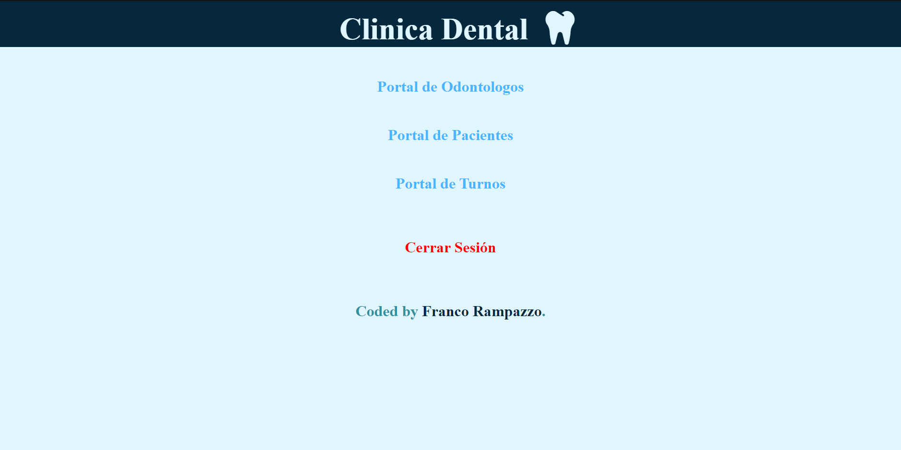

Aplicación de turnos odontológicos con Spring Boot y API Rest principalmente, Hibernate como ORM, PostgreSQL como BBDD y JavaScrip para el front. Utilizando Heroku para el deploy.
Estudio programación en la carrera de Certified Tech Developer en Digital House a traves de la beca otorgada por Mercado Libre junto con Globant, donde empecé a aprender acerca de la programación Full Stack desde la práctica con las herramientas y tecnologias actuales.
Click en las imágenes para ir al sitio
App funcional para calcular la propina a dar teniendo en cuenta el monto total, la cantidad de personas que pagan y el porcentaje que se desea dejar a modo de propina. Luego, mostrar el monto total y monto de la propina a pagar por persona.

Clasico juego de piedra, papel o tijera eligiendo por medio de tarjetas.

Pagina simple con una tarjeta donde se puntua del 1 al 5, devolviendo otra tarjeta con la puntuacion y un agradecimiento.

Formularios para iniciar, registrarse, dejar comentarios, etc. Pero sin ser funcional, solo maquetado con html y css.